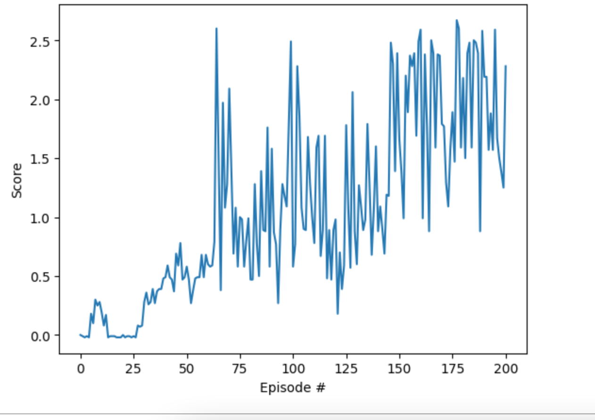

Self-play DDPG: two rackets, one ball, and nobody told either of them the other one is learning.
Here is a question that breaks everything single-agent RL assumes: what do you do when your opponent is learning too?
Up to now the world always sat still while the agent learned. The bananas never adapted. The reacher arm's target never fought back. You could collect experience on Monday and it was still true on Friday.
Tennis ruins that. Two rackets, each one learning, each one's world containing the other. Your racket gets better, so rallies get longer, so the other racket sees longer rallies, so it learns faster, so your world changes again. The ground moves under both of them the whole time. That moving ground is what makes multi-agent RL its own beast, not just single-agent times two.
And tennis is just the friendly version of the problem. Anywhere your world contains another learner, the ground moves: robot teammates sharing a warehouse, game AIs training against each other, traffic lights all adapting at once. Single-agent RL is learning an instrument. Multi-agent RL is joining a band where everyone is sight-reading a different chart.
This one is my TennisGym repo. A gym, in RL slang, is the environment an agent trains in: the world that receives its moves and hands back observations and rewards. This gym was built with Unity ML-Agents, the Unity toolkit for that job: tennis, two rackets, one ball, and one self-play DDPG pair driving both rackets.
This was the third project in Udacity's deep RL nanodegree, the collaboration-and-competition one, and it is the perfect finale for this series. Tennis takes all of that and moves the world underneath it.
What does the gym actually look like, number by number? Why does the embarrassingly simple approach, one shared DDPG pair playing both sides against itself, work at all? And what exactly breaks when your opponent is learning at the same time you are?
On this page
Picture the Unity scene. A tennis court floating in that clean simulator void, a net across the middle, two rackets hovering one per side, and a ball with a mind of its own. No crowd, no umpire, no second serve. Just physics, two rackets, and a learning problem. This is the whole gym, and it is worth seeing clearly before any algorithm talk, because every number below lives here.
A rally goes like this. The ball is in play. Your racket slides along its side, tracks the ball, times the intercept, and punches it back over the net. The other racket does the same on its side. Back and forth, until somebody misses: the ball kisses the ground or sails past the lines, and the rally is over. The ball resets, and they go again. Rally after rally, hundreds of them. That loop is the entire environment.
Each racket sees the world through 8 numbers, and that is all it gets: the position and velocity of the ball and racket. Printed out it would be a dull little list of eight numbers, ball-this, velocity-that, nothing more. No camera image, no opponent health bar, no mini-map. Eight numbers. Those are its eyes.
One repo detail before the network talk: the gym stacks three consecutive snapshots, so the actor's real input is 24 numbers per step, not 8. When this page says eight numbers, it means one snapshot's worth. The stacking is what lets the network feel velocity across frames instead of just reading it off a dial.
Notice what is not in the list. The other racket's dials. Its plans. Its brain. Your racket never sees its opponent at all; it sees the ball, and the ball is the only message the opponent ever sends. A fast incoming ball means the opponent just attacked. A soft floater means it is in trouble. Everything your racket knows about the other learner arrives second-hand, encoded in physics. That is partial observability, the five-dollar phrase for: you cannot see the thing you most need to predict.
One rally, slowed down, shows the numbers working. The ball is screaming toward your side, x-velocity -2.1 and falling. Your 8 numbers say: ball at (1.2, 0.8), dropping fast, your racket at (0.5, -0.2), too far left. The actor turns its dials: scoot right, small jump. Contact. The ball arcs over the net, and +0.1 lands in the diary. Eight numbers in, two numbers out, one tenth of reward. That is the whole game, repeated until somebody misses.
And it answers with 2 numbers, both continuous. One scoots the racket toward or away from the net. The other makes it jump. Continuous means no menu of moves: the racket can creep a little or lunge a lot, and every shade in between. You cannot argmax, pick the single best option from a list, over infinite scoots, which is exactly why this is actor-critic territory again, same as the reacher arm.
Feel the difference from the banana gym for a second. There, the agent picked from four buttons: forward, back, left, right. Here there are no buttons, just two dials that never click. The scoot dial does not say left or right; it says how far, how fast, in one smooth number. That smoothness is the whole reason the actor exists: somebody has to turn a dial that has no notches.
The rewards are delightfully lopsided. Plus 0.1 every time you clear the net. Minus 0.01 when you let the ball drop or sail it out of bounds. One clear pays for ten drops. Tattoo that ratio on your brain; it explains the entire training curve later.
The environment counts as solved when the better of the two rackets averages at least 0.5 over 100 episodes, where one episode is one rally: back and forth until somebody misses, and then the ball resets. Note the max, not the average, of the two. You only need one good player. If one racket can hold rallies at a 0.5 pace, tennis is happening, and the other racket was the sparring partner that got it there.
Translate 0.5 into something you can watch: solved, 0.5 averaged over 100 episodes, means the average rally is about five clears long. Not championship tennis. Just: the ball goes back and forth five times before somebody misses, reliably, a hundred episodes in a row. That is the bar, and it is lower than it sounds, which is exactly why one shared brain, reading just 8 numbers per snapshot, can clear it.
Tennis is a kind first gym for a hard problem, and that is not an accident. Rallies end in seconds, so the agent gets attempt after attempt in quick succession.
The score is dense: almost every rally produces clears and drops, so the reward signal never goes quiet for long. And the physics are honest: the ball does not lie about what just happened.
Compare that to robot soccer, where one goal every ten minutes teaches you almost nothing. If you wanted to invent a gym that makes the moving-world problem visible as fast as possible, you would invent something very close to this.
My run crossed 0.5 around episode 50, settled near 2.0, and peaked around 2.5.
In rallies: the run settled near twenty clears a rally and peaked near twenty-five.
The rackets went from pure flailing to twenty-hit rallies in about a hundred episodes. Not bad for eight numbers and two dials.
The whole gym in one picture: two rackets, one ball, one net. Each racket sees 8 numbers and turns 2 dials; a clear pays +0.1, a drop costs -0.01. And the dashed line is the point: your racket never sees the opponent. Everything it knows about the other learner arrives second-hand, inside the ball's flight.
The method is almost embarrassingly simple: one actor and one critic, shared by both rackets. Each step, both rackets read their 8 numbers through the same actor and turn their 2 dials, and both rackets' transitions, each one a record of the numbers in, the dials out, the reward, and the next numbers, land in the same replay buffer, a diary of past moments that training samples from later so it can learn from old rallies again. No special multi-agent machinery. From each racket's side of the net, the opponent is just part of the environment, which is technically a lie, since the opponent is the same brain on the other side of the net, learning. And it works anyway.
Why does the lie hold? Because from each racket's point of view, the opponent is just weather. Complicated, adaptive weather, but still just part of the machinery that turns 8 numbers into the next 8 numbers. Each racket runs the shared DDPG loop: read the 8 numbers, let the actor turn its 2 dials, let the critic judge the result, stash the moment in the shared diary. Every 64 steps the brain learns, 128 gradient updates, small nudges to the networks in the direction that lowers their errors, on 128 sampled moments. Nobody tells either racket that the weather is the same brain, on the other side of the net, getting smarter. The lie is load-bearing, and it holds.
And here is the sneaky part: the two sides bootstrap each other. Your side lands a few more clears, so rallies get longer, so the other side sees longer rallies, so it learns to return more, so your rallies get longer still. Better play manufactures its own training data. The reward wanted long rallies all along, every clear worth ten drops. Two rackets, one shared incentive, and the whole thing ratchets upward.
Under the hood it is the same DDPG recipe as the reacher page. The actor is a 256-256-128 network, those numbers are the layer widths, how many units sit in each layer, with tanh squashing the outputs, squeezing the 2 dials into their legal range.
The critic is 256-256-1: it swallows the 24 stacked observations plus the 2 actions and spits out one number, how good this move looks.
Both networks get batch norm, which normalizes each batch of numbers so their scale stays sane, both get gradient clipping, which caps how large any one update can be, and both learn through soft target updates, where the target networks, slow moving copies of the actor and critic that price what a move should be worth, are nudged only a little toward the live networks each time, so the targets cannot thrash around.
Exploration is the same OU (Ornstein-Uhlenbeck) noise from the reacher page, the smooth drifting kind, noise that wanders in one direction for a while and keeps getting pulled back toward zero, so a push lasts across a few steps and then fades: a racket's jump is a commitment across timesteps, and random twitches would teach nothing about follow-through.
Think about what the critic is actually learning to say. Its single output is a prophecy: given these 8 numbers and these 2 dial settings, how much +0.1 is coming your way? Early on the prophecies are garbage, because long rallies do not exist yet. But the first time a rally stretches to ten clears, the critic sees a full 1.0 of reward attached to the moves that built it, and the prophecy sharpens. The actor follows the prophet. That is the whole actor-critic deal, running once, shared by both rackets.
Every one of those stabilizers works overtime in tennis. Batch norm keeps the 8-number inputs on a sane scale even as rallies stretch into regimes the early random policy never visited. A policy, here, is the racket's rule for turning its numbers into dial settings: the 8 numbers come in, the 2 dial settings go out, and early on that rule is still untrained, so its settings are effectively random. Gradient clipping matters because the world moves: a batch sampled from last week's diary can disagree violently with this week's reality, and without clipping one bad batch can undo an hour of learning.
Soft target updates are the seatbelts: when your target is computed from a critic that is itself chasing a moving opponent, you update the targets slowly or you get whiplash. Single-agent DDPG needs these. Self-play DDPG needs them twice as much.
Here is one heartbeat of the learning loop, walked through one stage at a time.
A newcomer question I love: why one shared brain instead of two separate agents, one per racket, like the paper? Self-play is its own curriculum. The opponent is the same policy on the other side of the net, so every improvement to your game is an improvement to your opponent's game. The challenge scales itself: flailing rackets play flailing rackets, and by the time the brain can rally, it is rallying against itself at rally speed. No hand-tuned opponent schedule needed.
The flip side is the heart of this page: the world keeps moving precisely because the opponent is your own improvement, served back. As the shared policy improves, each racket's opponent, the same policy on the other side, improves too.
Each learning round samples only a small slice of the million-deep diary, so the diary turns over slowly, and that is the point. Stability comes from the crowd, not from any single moment.
But in tennis the crowd is full of outdated opinions, rallies against opponents who no longer exist. Slow turnover is a stabilizer in a still world and a liability in a moving one. Same diary, opposite verdict, depending on whether the world sits still.
The diary is a million moments deep, sampled 128 at a time. A million sounds generous until you remember the brain is burning through episodes against an opponent that rewrites itself nightly. Which brings us to the problem with the diary.
8 numbers. Same eyes, two sides of the net.2 dials per racket: scoot and jump, smooth, no notches.64 steps, the brain samples 128 moments, 128 times over. Learning never runs every step.Simplified toy: one heartbeat of the loop, with the repo's real numbers.
Nothing about this heartbeat knows the opponent is the same brain on the other side of the net. That is the beauty of it, and the lie.
In the banana and reacher gyms, the world had a fixed rulebook. Collect enough experience and the past was a fair preview of the future. That deal is what every replay buffer is built on. Tennis tears the deal up, because half the rulebook is the other racket, and the other racket rewrites itself every episode. The fancy name is non-stationarity. The plain name is: the world will not sit still while you learn it.
Watch what that does to a lesson. On Monday your racket discovers that floating the ball deep beats the opponent. By Wednesday the opponent has learned to camp deep, and your brilliant discovery now loses rallies. The lesson expired. Not because it was wrong, but because the world it was true in no longer exists. Every improvement you make devalues your own training data. That is the tax the moving world charges, and both rackets pay it for the entire run.
The Red Queen ratchet, named for the Red Queen effect, where you have to run as fast as you can just to stay in place because the other side keeps improving too: the mechanism behind the jagged curve. Every improvement lengthens rallies, longer rallies train the opponent, the opponent's improvement changes your world, and your old lessons expire. The loop never stops, which is why the diary keeps lying.
Evolution has a name for this: the Red Queen effect. You have to run as fast as you can just to stay in place. Your racket improves, which makes the opponent's world harder, which forces the opponent to improve, which makes your world harder. Nobody is standing still, everybody is working furiously, and the scoreboard barely moves for stretches. Then one side finds a real edge, the curve jumps, and the other side starts running again. That stop-start rhythm is the jaggedness you are about to see in the curve below. It is not noise. It is two Red Queens sprinting.
A replay buffer is a diary: it assumes the past predicts the future. In tennis, your diary is full of rallies against last week's opponent, who was dumber. Training on stale experience is like studying your rival's old match tapes: useful right up until they change their game, which they do every single episode.
The obvious fix is tempting: if old experience is stale, stop training on old experience. Keep only fresh moments.
The problem is that fresh-only training throws away the one thing that makes DDPG stable: the big, diverse, decorrelated diary, a diary whose sampled moments are shuffled so consecutive updates are not near duplicates of each other. A million moments sampled 128 at a time is what smooths the noise. Shrink the diary to yesterday's rallies and the updates get twitchy; keep the full million and half of it is lies about a dumber opponent.
There is no clean answer, which is why multi-agent RL has a whole literature of fancier fixes: opponent modeling, building a model that predicts the opponent's next move, centralized critics, a critic that sees both rackets' numbers and both rackets' dials during training, curricula, training on a sequence of opponents or tasks that get harder step by step. This page picks the simple end of that spectrum on purpose. The plain version is the one that shows the problem most clearly.
This is the thing people miss about multi-agent RL. It is not just single-agent times two. The non-stationarity breaks the core assumption every replay buffer is built on. My run's jagged curve is that struggle, drawn in blue. And once you see it, you cannot unsee it: every dip in that curve is the opponent getting smarter underneath you.
This is the actual training curve from my repo: one brain playing both sides, revealed in stages.

Training curve from my TennisGym repo: self-play DDPG on Unity ML-Agents tennis, average score (better of the two rackets) per episode.
The three acts, in gym terms. Act one, episodes 0 to 30: both rackets flail, the ball barely crosses the net, and the score hugs zero because every rare +0.1 gets eaten by -0.01 drops. Act two, episodes 30 to 100: somebody's timing clicks, rallies stretch, and the average crosses 0.5 around episode 50, about five clears a rally on average. Act three: both rackets can rally, the world calms down, and the average parks near 2.0. Three acts, one story: flail, click, sustain.
One thing the curve hides: it plots the better of the two rackets. The max-of-two solve criterion means you are always looking at the winner's scorecard. The other racket, the sparring partner, might be a step behind the whole run, eating drops so the winner can learn. That is not a flaw in the reporting; it is the point of the criterion. You only need one good player, and the curve shows you that player.
That jagged curve deserves a proper control experiment. How much of the mess is the moving world, and how much is just RL being RL? So: same gym, same learner, two courts. On the left court the opponent is frozen solid: same dumb returns, every episode, forever. On the right court the opponent learns alongside you. Same algorithm, same rewards. The only difference in the universe is whether the other racket is learning.
Against the frozen opponent the world sits still, so the diary tells the truth and the curve climbs like a textbook: smooth, fast, boring. Against the learning opponent it is a bar fight: every time the opponent figures something out, your score dips and you re-earn ground you already took. The gap between those two curves is the multi-agent insight, drawn instead of described.
How to read the two courts. Everything else is identical. Any difference you see between the two charts has exactly one possible cause.
An episode's score is just bookkeeping:
+0.1, and every drop, a ball let drop or sailed out of bounds, costs 0.01, so one clear pays for ten drops. The lopsided rates are the point: they tell the agent that trying things is nearly free, which is why the scores later launch instead of climbing.A control experiment this clean should come with a warning label. A real opponent is not a knob. You cannot set its learning speed to 0.6, and it does not hold still while you measure it. In the real run both courts are the right-hand one: both rackets dipping each other, both paying the tax at the same time. The left court is a fiction, a useful one. It shows you what this exact algorithm does when the world sits still, so you can attribute every extra jag to the only thing that changed.
Toy curves re-enacting the repo's real setup: same DDPG, same gym, same rewards. Only the opponent differs.
2.1. Right: a jagged climb, with red dots wherever the opponent improved and your score dipped. The gap between the two is the price of a moving world.Look at that curve again. Once rallies start, the scores do not creep up, they launch. The reason is the reward asymmetry, and you can feel it with this slider.
With that ratio, the moment rallies stretch past five or six clears, the penalty term becomes decoration and the score goes vertical. A rally ends when somebody misses, so every rally's score carries exactly one drop. That is why the curve launches instead of climbing.
Flip the rewards symmetric for a second: +0.1 for a clear, -0.1 for a drop. Now one drop wipes out one clear, and early exploration, which is mostly drops, gets punished hard. The agent would learn fear before it learned tennis, and the curve would crawl. The lopsided +0.1/-0.01 is a design choice, and it is doing real work: it tells the agent that trying things is nearly free. Cheap failure plus expensive success is why the scores launch. The rewards were the curriculum all along.
Now re-read the training curve with that asymmetry in mind. It crosses 0.5 around episode 50. Crossing 0.5 means the average episode is suddenly worth five-plus clears, and the sixth clear is what tips it. That crossing is not gradual because the rewards are not gradual: the moment rallies learn their sixth clear, the -0.01 term surrenders and the average goes vertical.
0.01 is the one drop every rally ends with, because a rally ends when somebody misses, so every rally's score carries exactly one drop. Cheap failure plus expensive success is why the scores launch.The 0.5 line is the solve line named in The tennis court: two rackets, eight numbers, two dials.
Score against rally length, drawn from the same score rule: the line crosses the 0.5 solve line at a 6-clear rally and reaches 2.99 at 30 clears.
+0.1 and one drop costs -0.01, so a 6-clear rally already crosses the 0.5 solve line, and a 30-clear rally scores 2.99, past my run's 2.5 peak.Enough curves. Here are my two trained rackets rallying at test time.
My trained rackets rallying at test time (TennisGym repo, Unity ML-Agents). This is the ~2.0-average policy from the end of that curve.
Test time is a different animal from training. The diary is closed, the OU noise is typically off, the critic is unemployed. Just the actor, reading 8 numbers and turning 2 dials, no learning allowed. What you are watching is pure policy: everything those rackets know, compressed into 256-256-128 weights, executed live. If it looks smooth, that smoothness was earned one gradient step at a time.
Each dial does one job. The scoot: rackets gliding along their baselines, tracking the ball sideways, never quite still. The jump: those little hops to meet a high ball, timed, not random. Every clean intercept is a +0.1; every whiff is a -0.01 and a reset. That is eight numbers and two dials playing actual tennis.
This is the 2.0-average policy from the end of that curve, the one that survived the bar fight. Twenty-hit rallies, from eight numbers and two dials. If you watch closely you can see the whole story in one rally: track, time, punch, recover, and an opponent doing the same thing back at you.
This page picks the simple end of the spectrum on purpose: one shared actor and critic, no extra eyes. But the moving-world problem is bigger than tennis, so it is worth knowing what the fancier answers look like.
The famous paper version of this idea, MADDPG (Lowe et al.), gives each agent its own actor and, during training, a centralized critic that sees everybody's observations and everybody's actions, so it can judge your move knowing what the opponent did. Centralized training, decentralized execution: at test time each actor only sees its own observations.
What the authors were after starts with a diagnosis: Q-learning, learning a score for every move on a short menu and picking the highest scoring one, breaks in multi-agent settings because the environment is inherently non-stationary, and policy-gradient variance (policy gradient means learning the actor directly from the rewards its actions earn, and variance is how much that learning signal swings from batch to batch) grows with the number of agents. Their fix adapts actor-critic to the multi-agent case around that centralized critic.
They also train an ensemble of policies per agent for robustness, an ensemble being a set of several policies trained for the same agent rather than one single policy, and showed agents discovering physical and informational coordination strategies (ways of working together through how they move and through information they pass to each other) in cooperative and competitive scenarios.
My tennis repo is MADDPG's simpler cousin: one actor and one critic, shared by both rackets, the critic seeing only one racket's 24 stacked numbers and 2 actions at a time. And it still solved tennis. That tells you something: the moving world is the hard part, not the architecture.
I also tried the fancier end myself: a prioritized replay buffer, which gives each stored moment a priority based on how wrong the critic was about it and samples the moments the critic is most wrong about first instead of sampling the diary evenly, and an ensemble of agents voting on actions. Neither helped enough to justify the complexity, so the plain version is what shipped. Sometimes the boring answer wins.
Three pages, three ideas, one breath. If someone corners you and asks what the difference is between these algorithms, this is the whole answer.
DQN is a menu. The world offers a short list of moves, the network learns a score for every item on it, and the agent picks the max. Four directions, yellow banana good, blue banana bad. The menu is the entire trick, and it only works while the list of moves is short enough to score.
DDPG throws the menu away. The dials are continuous, infinitely many settings, so scoring every option is impossible. Instead one network, the actor, turns the dials directly, and a second network, the critic, judges each setting. No argmax anywhere. That is the reacher arm holding its target dead still.
Multi-agent changes nothing about the networks and everything about the world. Same DDPG machinery, one shared brain driving both rackets. But now each side of the net lives inside the other's world, and the brain keeps rewriting the opponent it plays against. The ground moves. That is tennis, and that is the entire difference.